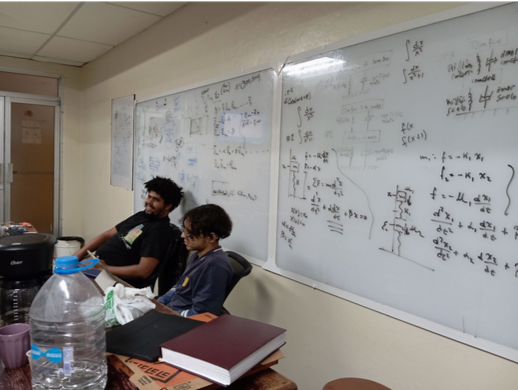
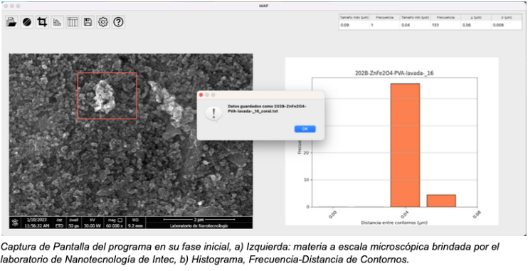
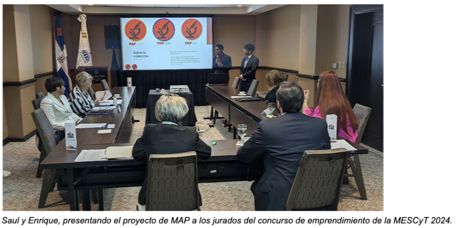
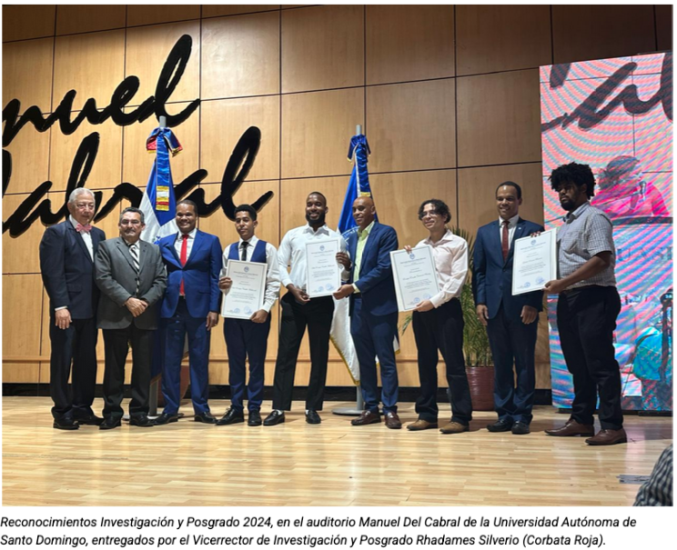
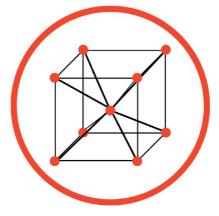

Comparte tu pasión por la física
Autor: Enrique Casanova
Más Info


El 14 de julio de 2024, tres estudiantes de física de la Universidad Autónoma de Santo Domingo (UASD) hicieron historia al ganar el segundo lugar en el concurso de emprendimiento de la MESCyT 2024. Enrique Casanova, Saúl Castillo y Jose Rojas, los primeros estudiantes de ciencias en participar en este concurso, fueron reconocidos por su ingenio al crear un programa de análisis de microestructura para analizar y caracterizar imágenes microscópicas, conocido como MAP (Microstructure Analysis Program). El innovador programa tiene el potencial de mejorar significativamente los análisis de laboratorio, tanto en el ámbito médico con aplicaciones en Histología, por tanto utilizable en microbiología para analizar microorganismos. Su compacta forma y manual interno, crean un ambiente incluso educativo para el usuario, haciendo que personas fuera del ámbito académico pueden utilizar el programa, un ejemplo sería el de un pequeño campesino que quiere verificar que no hayan parásitos u hongos en los cultivos, simplemente descargando el programa, escaneando una imagen que puede ser tomada desde su celular, y luego dejar que el programa haga su magia (para los programadores se le llama algoritmo), y ya no tendría que esperar a un especialista, que tome las muestras para luego mandarlas a un laboratorio y que dure semanas. Un ejemplo aun mas drastico pero escalable, es el caso de utilizarlo para detectar una infección de piel de una persona, incluso hasta un tumor cancerígeno.
La idea surgió en el Instituto de Física de la UASD y se materializó gracias al apoyo del laboratorio de nanotecnología de INTEC, que proporcionó las imágenes y las comparaciones empíricas necesarias, empezó simplemente con una idea extraída de la naturaleza. “ Estaba viendo un video parecido a animal planet, acerca de cómo los gatos pueden cazar tan bien en la oscuridad, la intensidad en el color que detecta el gato…, eso son píxeles realmente que la computadora puede ver y analizar mejor que cualquier animal ”, Gabriel Barreiro, estudiante de física por el cual surgió la idea de MAP. Y así como la preparación encuentra la oportunidad, surgen situaciones donde encuentras a las personas correctas en el tiempo correcto.
El premio obtenido, que servirá como capital semilla, permitirá a estos jóvenes emprendedores desarrollar investigaciones científicas y tecnológicas de manera eficiente y privada. Actualmente, Enrique, Gabriel y Saúl han formado una compañía de software con el objetivo de generar ingresos y apoyar a la comunidad científica y tecnológica. Su sueño es crear un instituto de investigación donde cualquier persona, nacional o internacional, pueda compartir sus conocimientos y desarrollar nuevas ideas y proyectos.
A pesar de que la ciencia y la tecnología en el país aún están en desarrollo, iniciativas como la de estos estudiantes pueden atraer la atención pública y contribuir al progreso del país. Aunque la República Dominicana recibe una gran inversión extranjera, el desarrollo de nuevas tecnologías y patentes es limitado. Sin embargo, con el esfuerzo y la creatividad de jóvenes como Enrique, Gabriel y Saúl, el panorama puede cambiar. Los tres también, desean inspirar a emprender, innovar y mejorar profesionalmente, que cada estudiante de ciencia que siente la dificultad actualmente pueda ver que existen oportunidades más allá de ser docente. En nuestro país hay muy pocos científicos, y por esto el estudiante de ciencia promedio (más si es de física) siente un gran abandono por parte profesional, esto tiende al estudiante compararse mucho y creerse esclavo de la incompetencia, simplemente por nacer en un país con poca cultura y inversion científica. Aun así la participación de estos estudiantes en programas de televisión como CDN y El Nuevo Diario ha demostrado al público que la ciencia y la tecnología pueden ser una vía para el progreso y la innovación. Ya hasta la UASD les dio un reconocimiento por su logro (que duros).
Incluso han formado una compañía de tecnología llamada BCC Tech, que desarrolla por el momento software científico y servicios para el público en general, y que va en camino de crear más proyectos que tendrán gran impacto en la comunidad científica y tecnológica del país. “Estamos abiertos a guiar a cualquier estudiante de física que quiera seguir nuestros pasos, ya sea en tecnología, innovación o ciencia, al final a todos nosotros nos encanta la investigación formal y crecemos todos los días con nuevas experiencias fuera de nuestras áreas. Ojala que incluso más estudiantes como nosotros (o no) se animen entrar en nuestra compañía y que puedan crear sus propios proyectos ” Enrique Casanova.
¿Por qué un cubo? (yo quería un triángulo) BCC (BASE CENTRAL CUBIC) es un arreglo atómico o molecular de red cristalina estudiado en Estado Sólido en Física (Solid State Physics), el cual fue elegido como emblema de la compañía por dos razones: 1) Los fundadores son estudiantes de término de la licenciatura en física de la Universidad Autónoma de Santo Domingo (UASD). 2) Es una abreviatura de los primeros apellidos de los tres fundadores, de aquí también el nombre de la compañía: BARREIRO CASANOVA CASTILLO TECHNOLOGIES (BCC Tech), fundada por Enrique Casanova, Gabriel Barreiro y Saul Castillo.